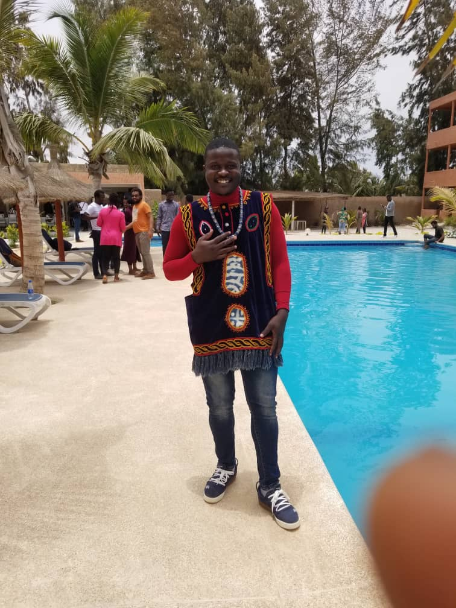

He is a trained industrial engineer and a machine intelligence student with a great interest in using AI and Machine learning to tackle societal problems.

1. Sentimentatl Analysis using Neural Networks
2. Multiclass Calssification using Naive Bayes
African Institute for Mathematical Sciences Senegal
African Institute for Mathematical Sciences Cameroon
National Advanced School of Engineering Yaounde